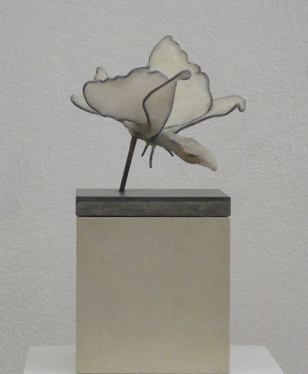
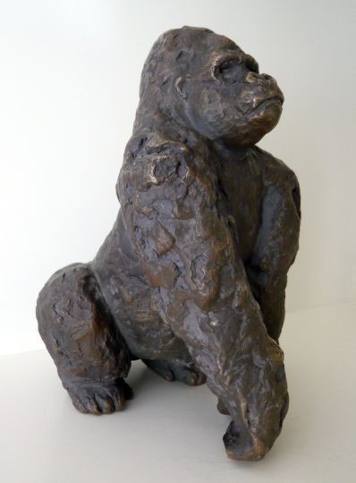
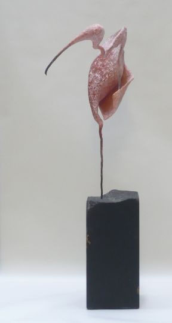
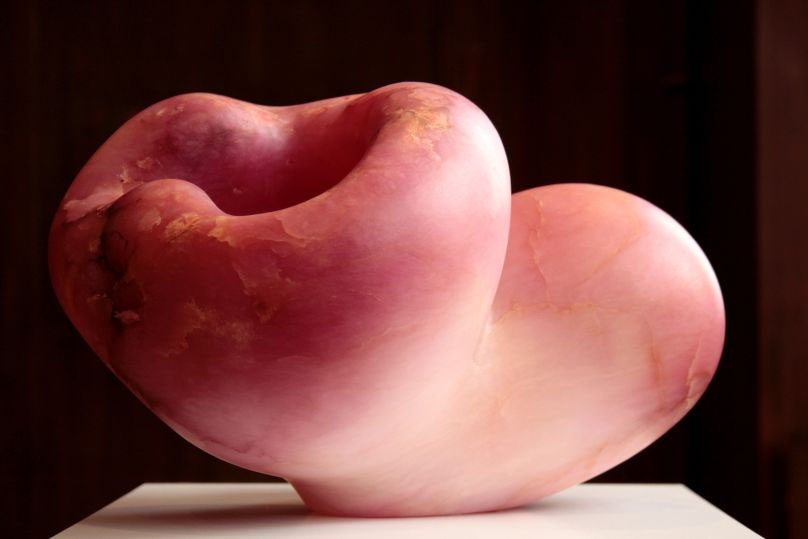
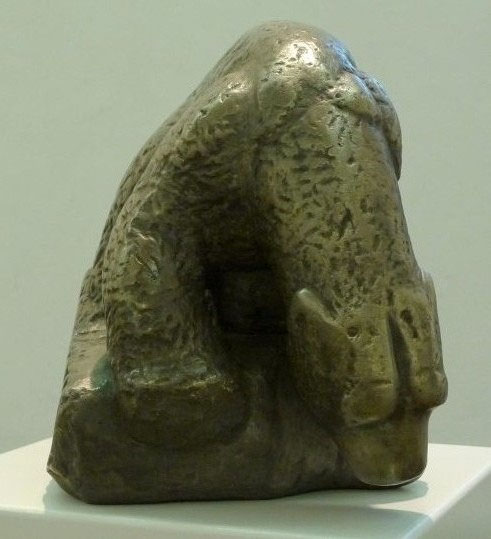
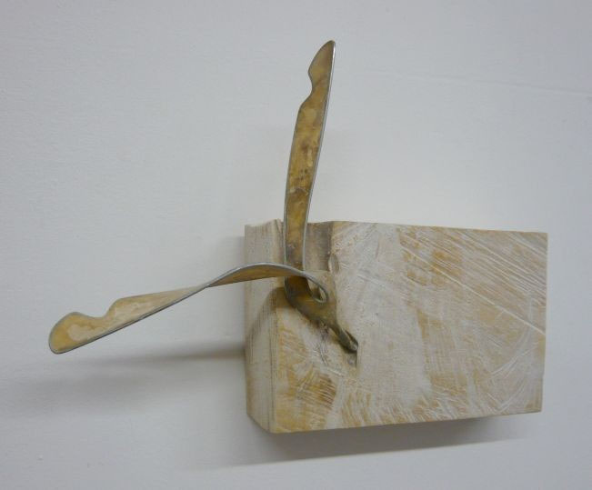
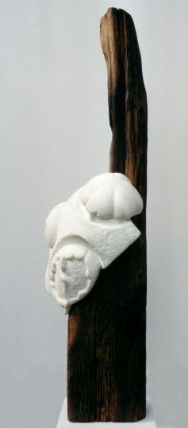
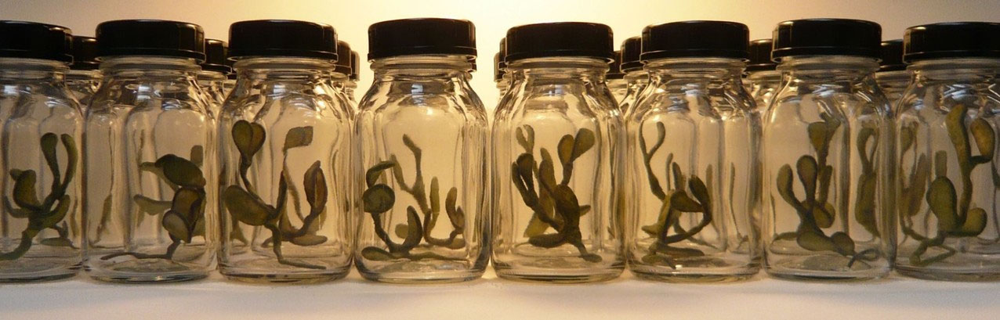
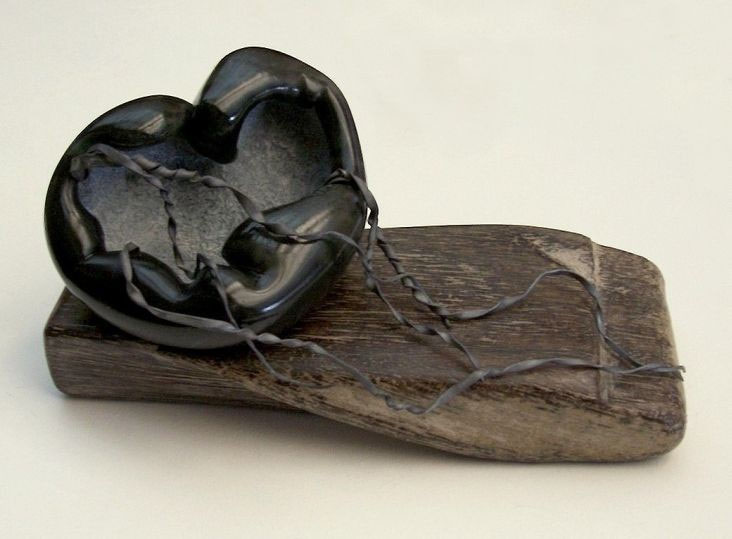

Drei Lesarten derselben Idee: der Besuch der Website soll sich anfühlen wie der Besuch einer Ausstellung. Gleiche Inhalte, gleiche Werke — drei verschiedene Räume.
Man betritt einen abgedunkelten Saal. Die Skulpturen stehen auf Sockeln im Lichtkegel, in fünf Kabinetten nach Material. Ein Klick öffnet die Vitrine — Einzelwerk, Wandschild, Pfeiltasten.



Ein weißer Saal, der sich seitwärts öffnet. Scrollen wird zum Gehen an der Wand entlang. Werke auf gemeinsamer Blickachse, Wandschilder links darunter, Grundriss am Boden.



Die Ausstellung als Erzählung: 38 Stationen, jedes Werk allein im Bild. Werke treten aus der Unschärfe hervor und verschwinden wieder. Papierlicht, das über den Besuch hinweg kippt.


